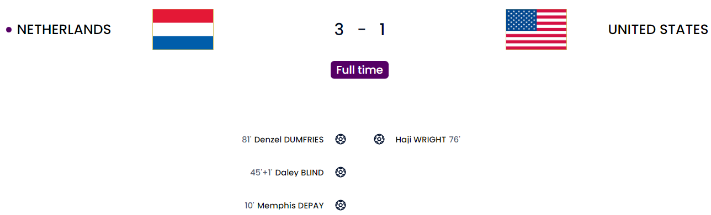
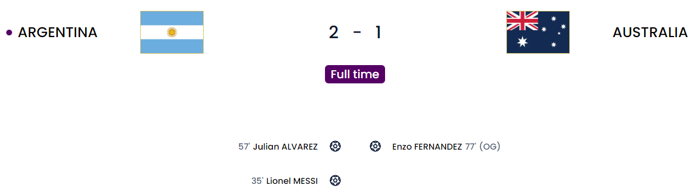
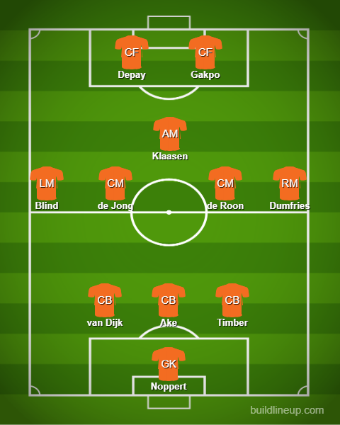
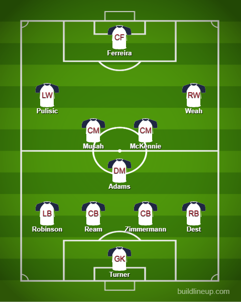
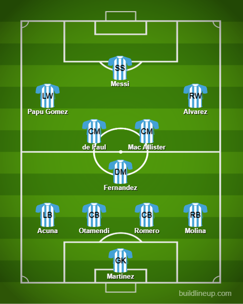
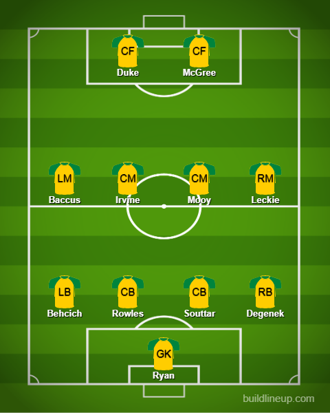

Day 14
Round of 16
Netherlands v USA and Argentina v Australia


The results now mean we have got a rematch of the 2014 WC semifinal and Argentina had to rely on penalties to get through. Will we see more of that? Given how the Netherlands game went, maybe. One was a boring no-contest with goals and the other was a game that got really REALLY close toward the end but Argentina managed to hang on.
Match 1
A boring counterattack game. USA can be proud. Dumfries heavily involved.
I was honestly not expecting this level of a low block from the Dutch. They just sat back absorbing the pressure and managed to counter quickly. Dumfries and Blind were initially held back by the exuberance of the USA full-backs at the start but they managed to get back in the right headspace, Dumfries more so providing 2 assists and a goal himself. The lone goal for the US came via Haji Wright who has been their only major threat all the way for them. The goal was a half flick on from his right foot more like which looped all the way in. Gave them a bit of hope but Dumfries managed to absolutely demolish any hopes of that after he was found unmarked by the cross. The first 2 were fairly similar. Dumfries bombs down the right, low cross to someone waiting. It was Depay and then Blind. We can understand why Ten Hag wanted Dumfries. He is pretty solid in defense and he has got that eye for the cross and is tireless going forward and back.
Netherlands

USA

Match 2
Messi finally gets a knockout stage goal. Martinez is called The Butcher for a reason 😤. Australia had a really good team spirit to pose a challenge.
Close one towards the end but Argentina is through safely to face the Dutch. The opener came from Messi(With the form he was in before this tournament, I was hardly surprised 😅) in his 1000th career game. Peter Drury put it best “A 1000 games and still, he excels”. It was a free kick and the loose ball falls to MacAllister(TIL that his father played with the late Diego Maradona 😱) who passes it to Messi and a quick pass to Otamendi who in reality just touched it before Messi pulled off a beautiful curler from that left boot of his which has scored and provided. Alvarez scored in the second half after playing from the back went horribly wrong for Ryan the keeper 🤦 and Alvarez pounced and slotted it away. Things seemed rosy…until it wasn’t. Roll on the 76th minute and Goodwin tries a long-range shot and it manages to go in after a rather hefty deflection of Enzo Fernandez(I big up him so much and something this unlucky happens to him 😅). Australia all of a sudden has halved the deficit. A big moment happened in the 80th minute where Behich almost made it 2-2 but Lisandro Martinez said “Not today sunshine”. He’s called the Butcher of Manchester for a reason 😤. Lautaro however had a golden chance provided by Messi but for some reason, he forgot his shooting boots. Chances were there on both ends. Australia had good spirit to keep pushing and holding on. Another last-gasp save was made by Emi Martinez from Kuol who was free after most of the defense was lying down but the keeper made himself big and managed to save it 👏.
Argentina

Australia
